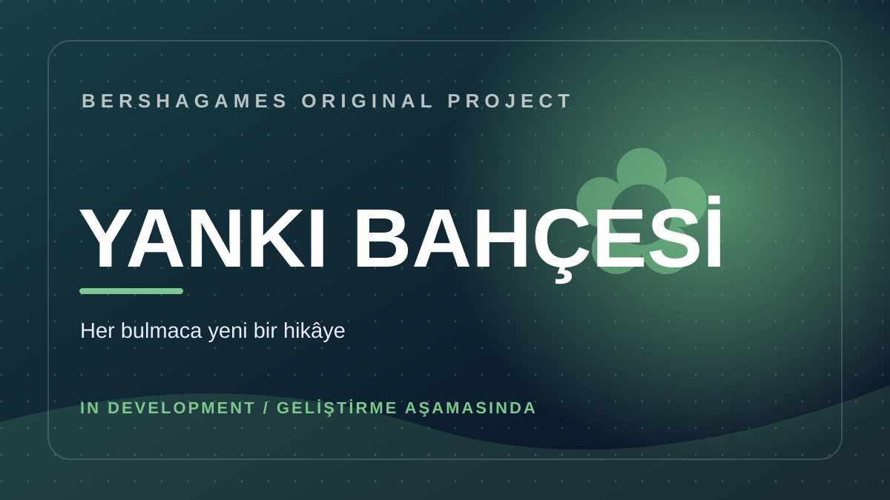

Yankı Bahçesi
Geliştirme aşamasındaOyun hakkında
Bulmaca mekaniklerini sakin bir bahçe atmosferiyle birleştiren oyun projesi.
Bu sayfa geliştirme sürecindeki projeyi tanıtır. Özellikler ve çıkış bilgileri değişebilir. Henüz doğrulanmış bir mağaza bağlantısı yayımlanmamıştır.
İletişim
Bu oyun için gizlilik politikası, kullanılan veri işleme sistemleri doğrulandıktan sonra yayımlanacaktır.
Yankı Bahçesi
In developmentAbout the game
A puzzle game project combining thoughtful challenges with a garden atmosphere.
This page introduces a work-in-progress project. Features and release information may change. No verified store listing is available yet.
Contact
A game-specific privacy policy will be published after its data processing and SDKs have been verified.